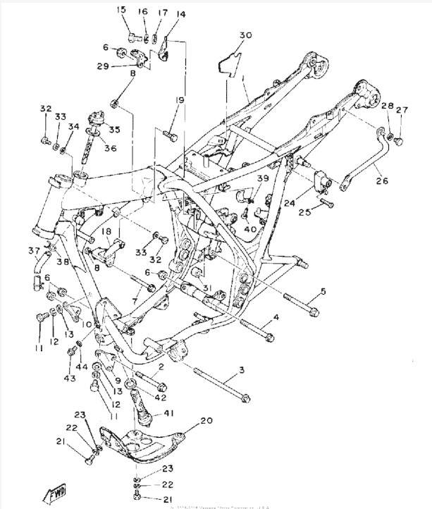
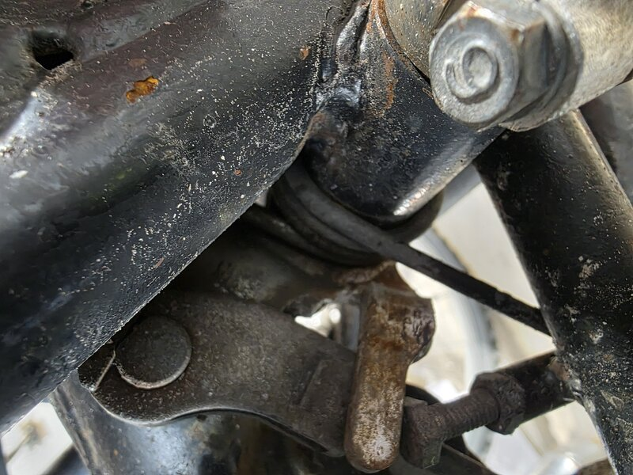

🏗️ Status: Motor ute av ramme
Da er endelig motoren løsnet fra rammen! 🎉

Jobben var overraskende grei — bare to bolter som sperret, og begge var lette å løsne. Nå gjenstår det å vinkle motoren ut, og så er rammen klar for vask og pulverlakkering.

✅ Gjort denne uken
- Motorbolter demontert
- Klar til å vinkle motoren ut av rammen
- GitHub Pages blogg satt opp 🚀
🔜 Neste steg
- Vinkle motoren ut
- Rammenevask
- Levere ramme for pulverlakkering
- Begynne å planlegge motor-overhaling
📋 Leverandørstatus
- KEDO — SR500-spesialist, aktuell for oppgraderingsdeler
- Yambits — OEM-deler, godt utvalg
Mer følger etter hvert som arbeidet skrider frem! 🔧